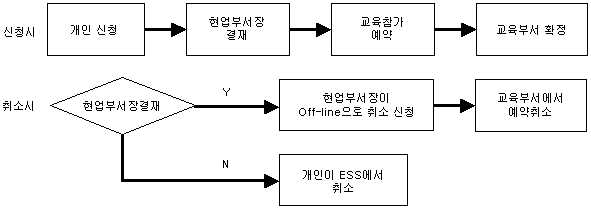
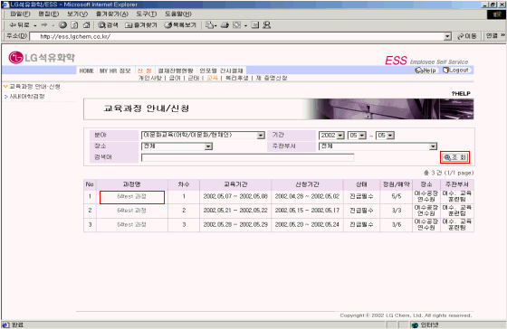
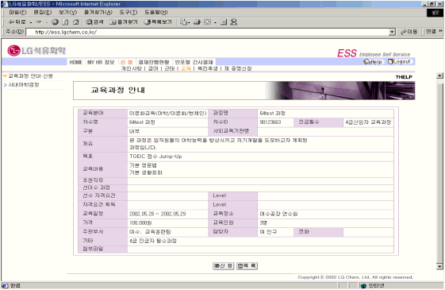
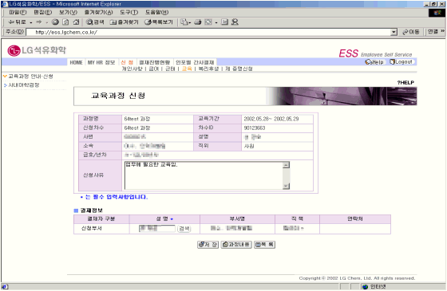

| Ⅰ. 개요 및 신청절차 |
| 1. 개요 |
| 사내/외에서 시행되는 교육과정을 조회하고, 필요 시 신청한다. 현업부서장이 결재하면 교육과정에 참가예약되며, 교육부서에서 참가를 확정한다. 신청한 과정을 취소할 시 현업부서장 결재 이전에는 본인이 ESS에서 취소하고, 결재 후에는 현업부서장이 off-line으로 교육부서에 취소 신청한다. |
| |
| 2. 절차 |
|  |
|
| |
| |
| Ⅱ. 화면사용법 및 유의사항 |
| <그림 1. 교육과정 안내ㆍ신청 화면> |
|  |
| |
| 1) 교육과정을 조회하기 위해서 교육분야, 기간, 장소, 주관부서를 선택하여 조회버튼을 클릭한다. |
| 또는 검색어 field에 교육과정명을 입력하여 조회버튼을 클릭한다. |
| 2) 교육과정에 대한 상세내용 조회를 하기 위해서 과정명칭을 클릭한다. |
| |
| <그림 2. 교육과정 상세안내 화면> |
|  |
| |
| 1) 교육과정에 대한 안내를 조회한다. |
| 2) 신청기간 이내인 경우에는 화면 하단에 "신청" 버튼이 나타나게 되고, 클릭하면 신청할 수 있다. |
| |
| <그림 3. 교육과정 신청 화면> |
|  |
| |
| 1) 신청사유를 입력하고 결재정보를 확인한 후 저장하면 신청이 된다. |
| 2) 결재정보에 조회된 현업 부서장이 결재하면 교육시스템에 신청이 된다. |
|
| |
| |
| Ⅲ. 제도소개 |
| 1. 교육참가 대상 |
| 전 임직원 |
| |
| 2. 적용대상 교육과정 |
| - 사내/외 과정 중 교육부서에서 필요하다고 인정하여 소집을 요청한 경우. |
| - 업무 skill 향상을 위해 현업 부서에서 필요하다고 판단되어 교육부서로 참가 신청을 한 경우. |
| |
| 3. 교육과정 참가 |
| - 필수교육 : 교육부서에서 개인별로 소집통보를 발송함. |
| - 선택교육 : 본인이 참가신청을 하고, 현업부서장이 승인하며, 교육부서에서 확정함. |
| |
| 4. 교육과정 취소 |
| - 부득이하게 교육과정을 취소할 시는 취소사유를 교육부서로 통보하여 허가를 득하도록 함. |
| - 단, 교육시작일 D-7일 이후 취소시에는 천재지변의 경우를 제외하고는 소속 팀으로 교육비용을 배분함. |
| |
|